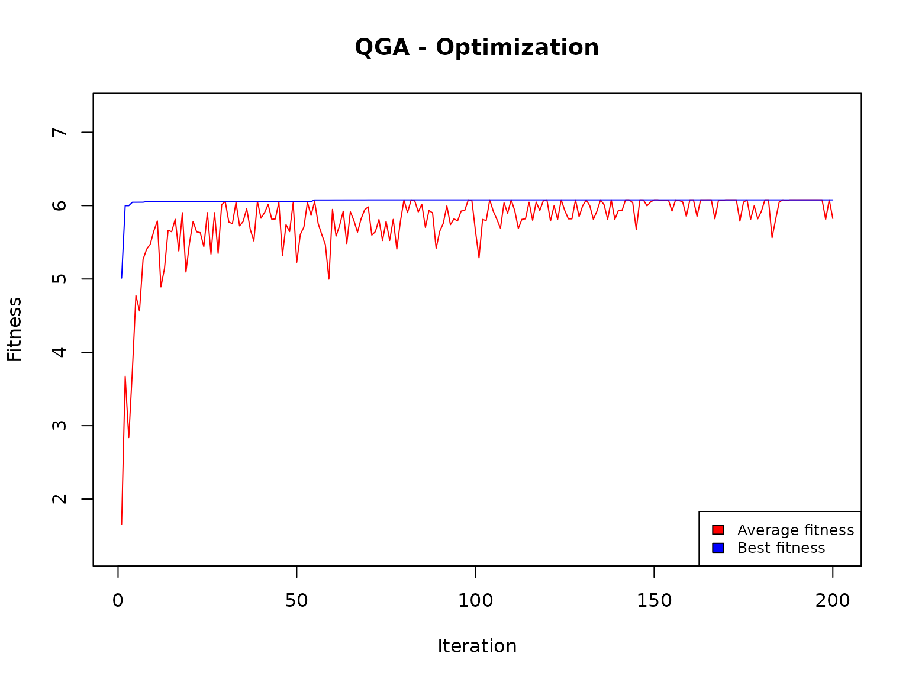
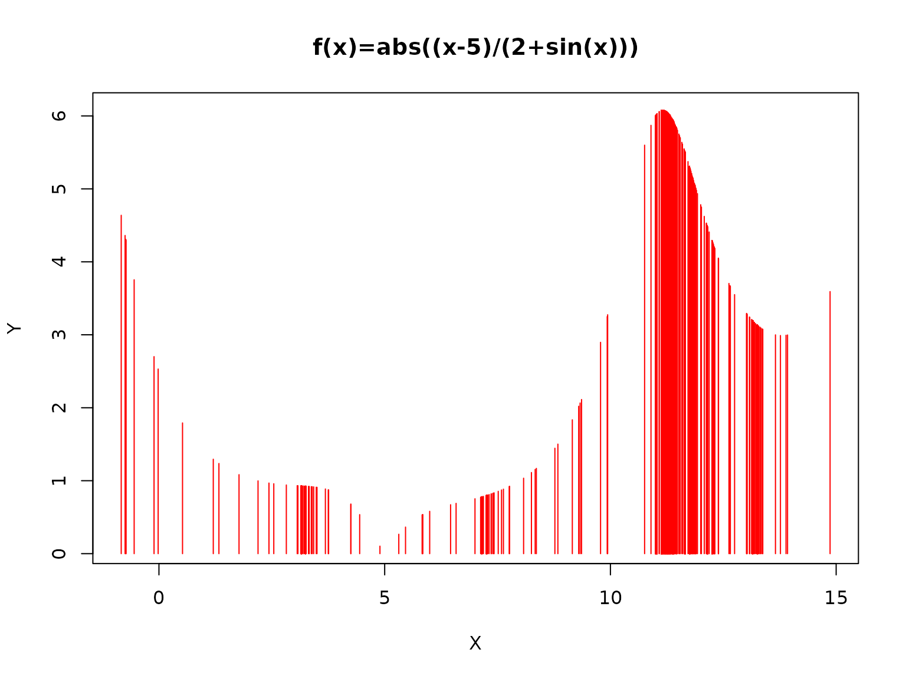

With the Quantum Genetic Algorithm it is possible to determine the maximum (or the minimum) of a function in a given interval of definition.
We consider here the same example reported by Lahoz-Beltra in https://github.com/ResearchCodesHub/QuantumGeneticAlgorithms/blob/master/QGA.py
that is, given a function
we want to determine its maximum in the interval 0-15.
First of all, we use the analytic approach: first, we obtain the first derivative of the function, and then calculate its roots when f(x) = 0:
# Analytic solution
if (!require(numDeriv)) install.packages("numDeriv", dependencies=TRUE)
library(numDeriv)
g <- function(x) {
(x - 5) / (2 + sin(x))
}
f_prime <- function(x) {
sgn <- sign(g(x))
g_deriv <- grad(g, x)
sgn * g_deriv
}
if (!requireNamespace("rootSolve", quietly = TRUE)) {
install.packages("rootSolve")
}
library(rootSolve)
root1 <- uniroot(f_prime, c(5.1, 12))$root
root2 <- uniroot(f_prime, c(12.1, 15))$root
# cat("Root 1: x ≈", root1, "\n")
# cat("Root 2: x ≈", root2, "\n")
f_root1 <- f(root1)
# f_root2 <- f(root2)
cat("f(", root1, ") ≈", f_root1, "\n")
#> f( 11.16085 ) ≈ 6.078025
# cat("f(", root2, ") ≈", f_root2, "\n")So, in correspondence with x=11.16085, we have a maximum for f(x) that is equal to 6.078025.
The solution found by Lahoz-Beltra is 5.999, somehow far from the real optimum, basically because in his example he defines a genome whose length is only 4. This implies that only 2^4=16 points are explored in the interval 0-15.
In our QGA application we define, instead, a much longer genome (with 64 (qu)bits), that allows to explore 65536 points in the same interval.
First, we define the fitness function:
functionMax <- function(solution, eval_func_inputs) {
solution <- solution - 1
# translate from binary to decimal value
x=0
for (j in c(1:Genome)) {
x=x+solution[j]*2^(Genome-j)
}
# Normalize the obtained x into the interval 0-15
x=x*16/(2^Genome-1)-1
# replaces the value of x in the function f(x)
y= abs((x-5)/(2+sin(x)))
fitness=y
# Store the current solution
X <<- c(X,x)
Y <<- c(Y,y)
# cat("\nSolution=",solution," x=",x," y=",y)
return(fitness)
}Note that
the solution is always generated as a sequence of 1 and 2, so it is necessary to reduce it to a sequence of 0 and 1 (solution - 1);
the current binary solution is used to generate a real number in the 0-15 interval.
Incidentally, if we want to find the minimum of the f(x), the fitness function should return (-fitness).
Then, we set the parameters:
popsize = 20
generation_max = 200
Genome = 16
nvalues_sol = 2
thetainit = 3.1415926535 * 0.15
thetaend = 3.1415926535 * 0.015
pop_mutation_rate_init = 1/(popsize + 1)
pop_mutation_rate_end = 1/(popsize + 1)
mutation_rate_init = 1/(popsize + 1)
mutation_rate_end = 1/(popsize + 1)
mutation_flag = TRUEThe population size (popsize) and generations (generation_max) are equal to those reported by Lahoz-Beltra. The genome is a sequence of 16 bits (Genome = 16), binary because nvalues_sol=2. The rotation gate is initially set to 3.1415926535 * 0.15, while towards the end it is reduced to 3.1415926535 * 0.15. This allows to explore at the beginning all the interval 0-15, while at the end the exploration is concentrated around the best solution found so far. The mutation rate (Pauli gate) is always set to 1/(popsize + 1)=0.04761905: this means that at each iteration, about 4.7% of the bit values are swapped.
Finally, we apply the quantum genetic algorithm:
library(QGA)
X <- NULL
Y <- NULL
set.seed(1234)
solutionQGA <- QGA(popsize,
generation_max,
nvalues_sol,
Genome=16,
thetainit,
thetaend,
pop_mutation_rate_init,
pop_mutation_rate_end,
mutation_rate_init,
mutation_rate_end,
mutation_flag = TRUE,
plotting = FALSE,
verbose = FALSE,
progress = FALSE,
eval_fitness = functionMax,
eval_func_inputs = list(X,Y))
#>
#> *** Best fitness: 6.05498 The found solution is
solution <- solutionQGA[[1]]
solution <- solution - 1
solution
#> [1] 1 1 0 0 0 1 0 0 0 0 0 0 0 0 0 0
x=0
for (j in c(1:Genome)) {
x=x+solution[j]*2^(Genome-j)
# cat("\n",j," solution[j]:",solution[j]," 2^solution[Genome-j-1]:",2^(Genome-j))
}
x=x*16/(2^Genome-1)-1
y= abs((x-5)/(2+sin(x)))
cat("Function maximum: ",y," at x=",x)
#> Function maximum: 6.05498 at x= 11.25019We remind that the analytical solution was:
cat("f(", root1, ") ≈", f_root1, "\n")
#> f( 11.16085 ) ≈ 6.078025very close to the one found by the QGA.
Finally, we can have a picture of the exploration of the interval 0-15 by looking at the following plot:
